BANXUM is a peer-to-peer (P2P) lending marketplace. "Peer-to-peer" means individual people lend money directly to businesses, instead of a bank sitting in the middle and lending its own money.
Here is the basic idea. Individual investors (we also call them "lenders") put money into BANXUM. That money is then used to fund loans to vetted business borrowers. The borrowers pay the money back over time, with interest. The interest is shared back to the investors who funded that loan. Investors can later take their money out again.
BANXUM is operated by Garanta Finanzgruppe AG, a Swiss financial group. "Garanta" is the operator, and you, as an operations admin, work for Garanta. BANXUM does not lend its own money and is not a bank. It runs the marketplace, checks who everyone is, moves money correctly, and keeps records.
This manual is about the internal ops console served at /admin, which only Garanta staff use. It is NOT the app that investors log into. Throughout this manual, "the console" or "the admin console" always means the staff tool, never the investor app.
Almost everything in BANXUM involves these four parties. Learn them first; the rest of the manual refers to them constantly.
Money flows in one big cycle. Follow it once and most screens will make sense.
Step 1, the investor sends a bank transfer. The investor wires money from their own bank to a Garanta collection bank account. "Collection account" just means the Garanta-controlled bank account that receives investor money.
Step 2, the transfer is matched and ledgered. When the money arrives, an admin confirms the bank operation and records it in the ledger (the system's official books). Crucially, the investor must put a specific payment reference on their bank transfer so we can tell whose money it is. That reference has the exact format BX-{currency}-{investor_reference}, for example BX-CHF-AB12CD for a Swiss-franc deposit from investor AB12CD. The reference is unique per investor and per currency and must be copied unchanged into the transfer description. A transfer with no reference, or the wrong one, cannot be matched automatically and lands in a suspense/unmatched state for an admin to resolve.
Step 3, the money becomes an investable balance. Once matched, the deposit creates a "balance lot" (think of it as a dated parcel of that investor's money) and the amount becomes investable. Balance buckets are explained in section 5.
Step 4, the investor invests in a loan (the primary market). The investor places an investment order against a published loan. Their investable balance is reserved for that loan. When the loan finishes funding, the reserved money is committed to it.
Step 5, the borrower is disbursed. Once a loan is fully funded and the borrower's KYB is approved, an admin pays out (disburses) the loan principal to the borrower's bank account.
Step 6, the borrower repays. Over the loan term the borrower sends repayments (principal plus interest) back to a Garanta collection account. An admin records each repayment and distributes it to the investors who funded that loan, in proportion to how much each one put in.
Step 7, returns land back in the investor's balance. Each investor's share of principal and interest is credited back to their BANXUM balance as new balance lots.
Step 8, the investor withdraws to their bank. When the investor wants their money out, they request a withdrawal to a registered bank account (a "payout instruction"). An admin finalises it and the money is wired from the Garanta collection account back to the investor's bank.
This is the single most important idea for an operations admin. An investor's BANXUM balance is NOT a savings account.
The balance is non-interest-bearing operational money. "Non-interest-bearing" means simply holding money in BANXUM earns the investor nothing; interest only comes from funding loans. "Operational" means the balance exists so the investor can invest or withdraw, not to park cash. The funds are also segregated, meaning investor money is kept apart from Garanta's own money, not mixed with it.
Because BANXUM is not a deposit-taking bank, regulators do not allow investors to sit on idle cash indefinitely. So every balance lot is subject to ageing. Ageing means a parcel of money has clocks running against it from the day it was received, and what the investor is allowed to do with it changes as those clocks pass.
There are two ageing windows, measured from when the money was received:
The 30-day window (the investment deadline). For the first 30 days a lot is investable: it can be pledged into a published loan, or withdrawn. After 30 days that lot can no longer be used for new loan funding. It becomes withdraw-only. Important: the lot only has to be pledged while it is inside this 30-day window; the loan's funding campaign can close later, because published campaigns themselves are capped so the total holding time stays inside the 60-day operating limit.
The 60-day window (the withdrawal deadline). At 60 days the lot has reached the regulatory holding limit and must leave BANXUM. The investor cannot extend this deadline and neither can Garanta. The system sends the investor reminder emails as the deadline approaches (around days 25, 46, 53, 58, 59 and 60).
What happens when a lot reaches or passes the 60-day limit depends on whether the investor has given us a usable bank account to send the money to. "Usable" means a payout instruction (a registered IBAN) that an admin has verified. The handling fires on the first balance ageing scan at or after the deadline (the scan treats a lot as overdue once the business date is on or past the withdrawal deadline), so a lot already past 60 days is swept up too, not only one exactly on day 60. Two outcomes are possible, handled automatically by the balance ageing scan.
When you look at an investor's money, it is grouped into buckets. A bucket is just a label describing what the investor can currently do with that money. The bucket is decided per balance lot, from the lot's status and its two ageing clocks. The same investor can have money in several buckets at once.
Only money that is genuinely still sitting in the balance (the "available" amount of a lot) counts toward these buckets; money already invested, withdrawn, converted in an FX exchange, or eaten by penalties does not.
A loan moves through a fixed set of statuses. Knowing the order tells you what is and is not allowed at each step.
draft: the loan exists only as an internal record an admin is preparing. Investors cannot see it. It can still be edited freely.
published: an admin has published the loan to the marketplace, so investors can now see it and invest. A loan can only be published from draft, and only when its required fields, repayment schedule, funding window and the borrower's KYB gate all pass. Once published it has a published_at timestamp.
funded: enough investor money has been committed and an admin closes funding. Only a funded loan can be disbursed to the borrower. (Funding can also be cancelled before close, returning reserved money to investors; a never-funded loan can end up cancelled.)
performing vs late vs defaulted: after disbursement the borrower repays on a schedule. As long as installments are paid on time the loan keeps performing (its status stays funded). If an installment is overdue by 5 days or more the system marks the loan late. If an installment is overdue by 16 days or more it is marked defaulted.
repaid: the borrower has paid everything back. The loan is complete and investors have received their principal and interest.
defaulted then recovery or written-off: a defaulted loan moves into recovery, where Garanta tries to collect what it can (for example by enforcing collateral). Money recovered is distributed to investors. If nothing more can be collected, the remaining amount is written off, meaning it is formally recognised as a loss to the investors who funded it.
Primary market vs secondary market, in one line each:
BANXUM blocks risky or non-compliant actions by design. These blocks are called gates. The most important thing to understand: gates are enforced on the server (the backend), not just hidden in the screen. You cannot click your way past them in the admin console, and neither can an investor. If a gate is not satisfied, the action is refused server-side, full stop.
Identity gates. People are checked with KYC; companies are checked with KYB.
KYC (Know Your Customer) is identity and anti-money-laundering verification for a person, run through Didit. A KYC case has a status, and only one status, "approved", lets the person act. Every other status blocks them, including not_started, pending, declined, manual_review, high_risk, sanctions_hit, pep_hit, adverse_media_hit, expired, and reverification_required. A "sanctions hit" means the person matched a sanctions list; a "PEP hit" means they were flagged as a Politically Exposed Person (someone in or close to public office, who needs extra scrutiny). When Didit's automated result is unclear or flagged, the case goes to manual_review, where a Garanta compliance admin decides to approve, decline, or request re-verification.
KYB (Know Your Business) is the company equivalent, for borrowers. A borrower can only transact (receive a disbursement) when its KYB status is "approved" AND it has no compliance hold. A "compliance hold" is a manual switch an admin can set to stop a borrower for any reason, regardless of KYB status.
Phone verification. Sensitive money actions also require the investor's phone number to be verified. An account is phone-verified only once a verification challenge has been confirmed.
Account statuses. Every account carries a status: pending_kyc (the default for a brand-new account that has not finished verification), active, restricted, locked, or closed. Pending-KYC lender accounts may still log in so onboarding can resume, but they cannot use financial features yet. Restricted, locked, and closed accounts cannot log in; closing also makes the account inactive.
Putting it together for investors: the system only lets an investor reach financial features (balances, investing, withdrawing) when the account is an active lender AND the phone is verified. There is one more gate that depends on the account type. For a natural-person lender ("natural_person_lender"), that person must also have an approved KYC case. For a company representative ("legal_entity_lender_representative"), active-lender plus phone-verified is enough; there is no personal-KYC check on the representative, because the company's identity is handled through the entity's KYB instead. Miss a required gate and the financial screens are refused.
The console at /admin is organised into seven areas in the left-hand navigation. Here is each one in a single sentence so you know where to go.
The admin console lives at the /admin address of the BANXUM web app. It is completely separate from the investor app that lenders use. Only staff accounts of type admin or superadmin, with an active status, can sign in.
Signing in is two steps. First you enter your work email and password. Then BANXUM emails you a one-time numeric code, which you type on the next screen. This second step (an emailed code) is a security measure — even if someone learns your password they cannot get in without your mailbox. If you mistype the code too many times you must start again.
The layout. A dark navigation rail runs down the left with the seven areas of the console (described in the sections that follow). The main area on the right shows the selected area. A top bar shows where you are and who the operator is.
Preview vs. live data. When the console shows a small "Preview data" tag near the top right, you are looking at fixture (demo) data — safe for training and screenshots, not real customers. A live deployment has no such tag and every action affects real money and real people. The screenshots in this manual were taken in preview mode, so the names and numbers are invented.
Signing out. Use the "Sign out" button at the bottom of the left rail when you finish. Never leave an authenticated admin session unattended.
The Daily Dashboard is the first screen you see when you open the ops console, and it is the screen you start each shift on. Think of it as a control tower: it gathers the work that needs human attention from every part of the platform into one place, so you can see at a glance what is waiting and how urgent it is. (The ops console is the internal admin tool used by Garanta staff; it is separate from the app that investors and borrowers use.)
The screen has three parts. At the top is a row of four KPI tiles (KPI means 'key performance indicator' - a headline number you watch). Below that is the queues area: a left rail listing 13 work QUEUES, each with a live count, and a table showing the items inside whichever queue you have selected. At the bottom is a multi-currency balance summary table that shows the platform's money position broken down by currency (for example CHF and EUR).
A QUEUE is simply a named list of things that need looking at - for example loans waiting for funding, or investor withdrawals waiting to be paid out. Each item in a queue points at a real record elsewhere in the platform (a loan, a withdrawal, a bank transfer, and so on).
Important: this screen is read-only triage. You use it to SEE and PRIORITISE work, not to act on it. To actually approve a KYC case, pay a withdrawal, publish a loan, and so on, you go to the matching module screen in the left navigation (Compliance, Finance ops, Loans, etc.). Clicking a queue item here opens a detail drawer that shows context only; it does not yet perform any action.
A row of four headline counters that summarise the entire dashboard at a glance. They are calculated from all 13 queues combined, not just the one you have selected.
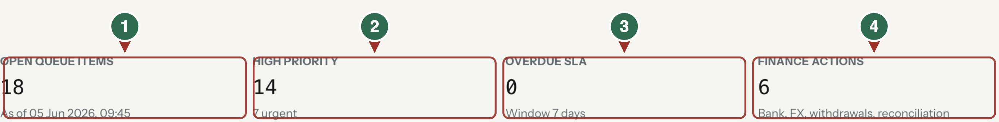
The main working area. The left rail is a vertical list of 13 work queues, each with a live count. Clicking one loads its items into the table on the right. Each table row is a single piece of work that lives in another part of the platform; clicking a row opens a read-only detail drawer.
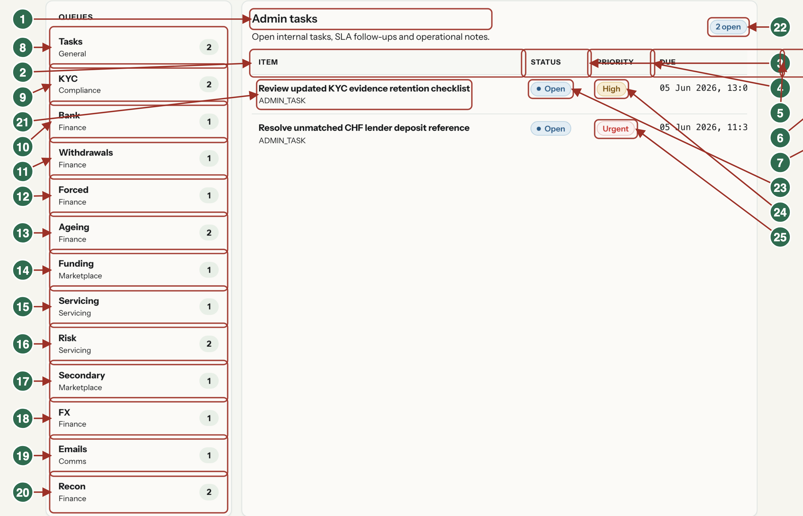
A platform-wide money snapshot broken down by currency. Each row is one currency (for example CHF, EUR) and the columns split that currency's balances into operational buckets - how much is usable, how much is locked, how much is overdue, and how much is tied up in pending bank, withdrawal or FX operations. All amounts are read-only; they are computed from the ledger when the dashboard loads.
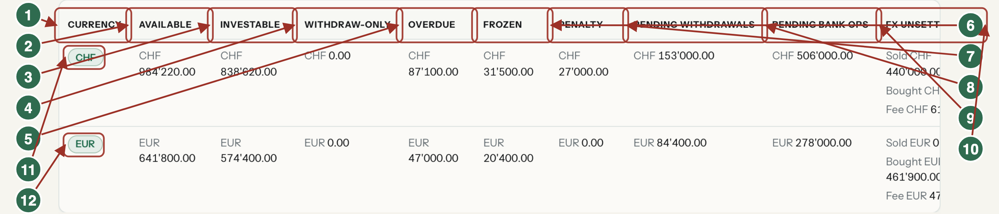
The Tasks screen is the operations team's shared to-do list. A "task" is one piece of work an admin needs to do, for example "resolve an unmatched bank deposit" or "review a KYC case". KYC means Know Your Customer: the legal checks that confirm who a person is before they can use a financial service. The screen lets you create tasks, sort through them, and move each one along until it is finished.
Tasks come from two places. Most are created by hand by an admin (the New task button). Some are created automatically by the system, such as a "reconciliation break" task. Reconciliation is the daily check that the money the bank says we hold matches the money our own records say we hold; a "break" is a mismatch that someone must investigate. Auto-generated tasks show a specific Type (for example Payment Reconciliation) and are linked to the record that caused them.
Each task has a Type, a Priority (how urgent), a Status (where it is in its life), an optional Due date, and an optional link to a real object in the system (a loan, an investor, a withdrawal, and so on). You can link a task to that object so anyone reading it knows exactly what it is about.
Important: this screen is a lightweight tracker only. It does not perform the actual money or compliance actions. The real work (executing a withdrawal, approving a loan, recording a KYC decision) is done on the owning screen (Finance ops, Loans, Compliance). A task is just a reminder and an audit trail that the work happened.
The header bar for the whole screen. It names the queue, and holds the two main action buttons: refresh the list, and create a new task.
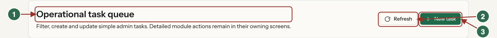
Four controls that filter the table below. Status, Priority, and Type are dropdowns sent to the server; Search is a free-text box that filters the already-loaded list on your screen.
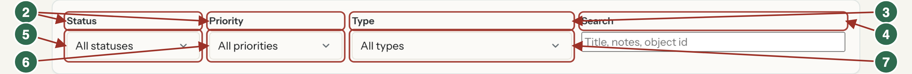
The list of tasks that match the current filters. Each row shows the task title and type, its status and priority chips, due date, linked object, and when it was last changed. Clicking anywhere on a row opens that task's detail drawer.
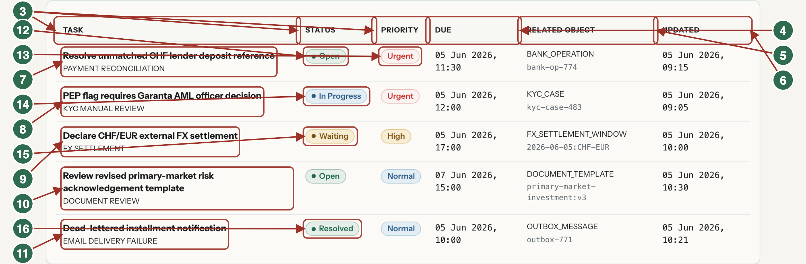
Compliance is where Garanta staff make the identity and money-laundering decisions that an automated check could not finish on its own.
Some background terms, in plain language. KYC means "Know Your Customer": proving a person really is who they say they are. KYB is the same idea for a business ("Know Your Business"). AML means "Anti-Money-Laundering": checking that a customer is not on a sanctions list, is not a known criminal, and is not trying to hide where their money came from.
BANXUM does not run these checks by hand. An outside provider called Didit collects the customer's ID documents and screens them. Didit then returns a result. Most results are automatic: clearly approved, or clearly declined. But some results are unclear and Didit "routes them to manual review", which means it hands the case to a Garanta officer to decide. Those cases land on this screen.
A "PEP" is a Politically Exposed Person: someone in a powerful public role (or close to one), who is treated as higher-risk. "Adverse media" means bad news coverage linking the person to crime or wrongdoing. "Sanctions" are official government blocklists; a person on one is legally forbidden to do business.
The second half of this screen is unrelated to KYC: it lets an admin change a user's account status, for example to freeze a suspicious account or close one on request.
A table of identity/AML cases that Didit could not decide automatically and handed to Garanta. Each row is one subject (a person or business). Click a row to load that case into the decision form on the right. The text below the table notes the key rule: sanctions and fraud blocks stay non-overridable on the server, so this queue is for the genuinely judgeable cases.
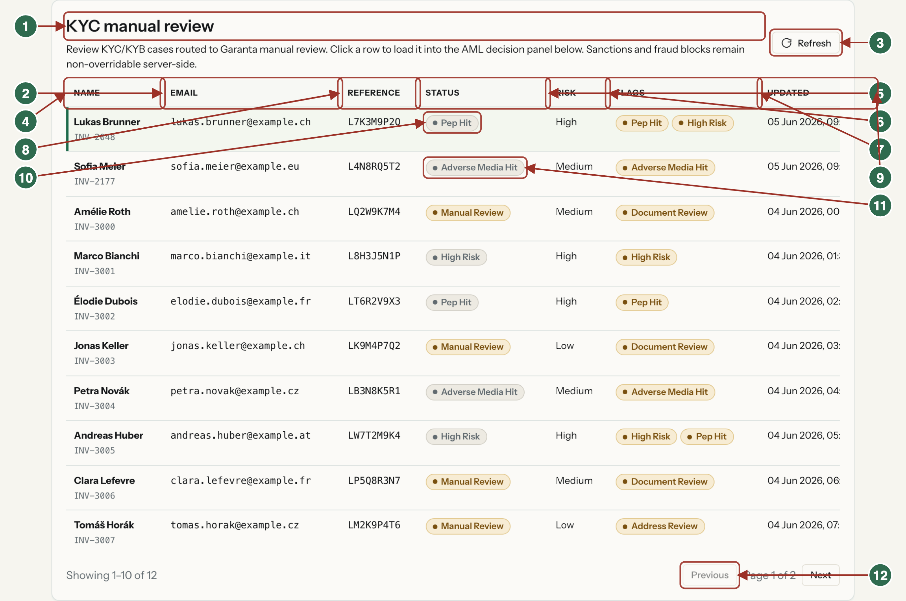
The form where you record your decision on one KYC/AML case. Pick the case (it auto-fills from the row you clicked), choose the decision and a reason, write a note plus an evidence summary, then submit. The backend re-checks every rule before saving, and the decision is permanently audit-logged.
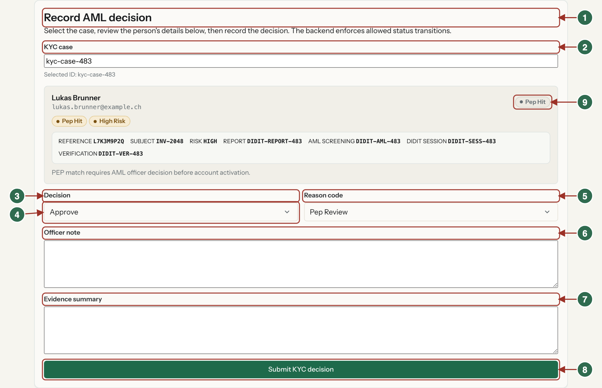
A separate tool for changing a user account's status: restrict, lock, close, or reactivate it. Pick the user, choose the new status and a reason, write a note plus evidence, tick the clean-account box when closing, then apply. Strong guardrails apply: closing needs the clean-account confirmation, only a superadmin can change another admin's account, and a closed account cannot be reactivated.
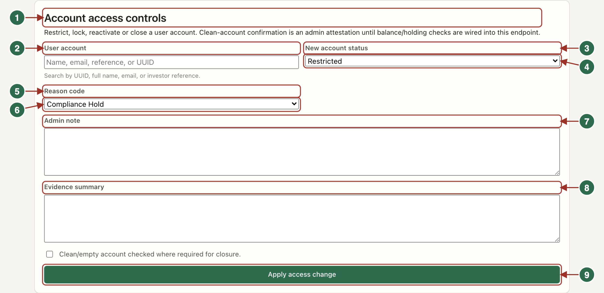
Finance Operations is the money-movement cockpit of the admin console. This is where Garanta staff record cash that has actually entered or left the company's bank account, and where the system's internal ledger is kept in step with reality. Nothing here moves money by itself: each form records, in the ledger, a bank transfer that you (or the bank) have already arranged or observed.
A few terms you will see on every form. 'Minor units' means the amount in the smallest currency unit, i.e. cents (rappen for CHF). So 2,500,000 minor units equals 25,000.00 CHF. Always enter whole numbers in minor units, never decimals. The 'collection account' is Garanta's own pooled bank account that holds all lender money before it is invested or paid out. A 'deposit' is incoming money from an investor; a 'disbursement' is outgoing money to a borrower; a 'withdrawal' is outgoing money back to an investor.
Most forms include an 'investor' (or loan/borrower/withdrawal) autocomplete. You type a name, email, investor reference (a code like L7K3M9PQ2), UUID, or IBAN; the box searches the database and lets you pick a real record. When you pick one, the box quietly stores the matching hidden ID and shows 'Selected ID: ...'. If you type text but never pick a result, the form will refuse to submit. The visible text is just for searching; the hidden ID is what actually gets sent.
Because each action posts permanent accounting entries, every submit carries an automatic idempotency key so an accidental double-click cannot double-book a transfer. Watch the success and error banners after each action: they tell you exactly what the ledger did.
This form declares that money from an investor has landed in Garanta's collection account, and credits that investor's balance in the ledger. Use it only when a real incoming transfer has been seen on the bank statement.
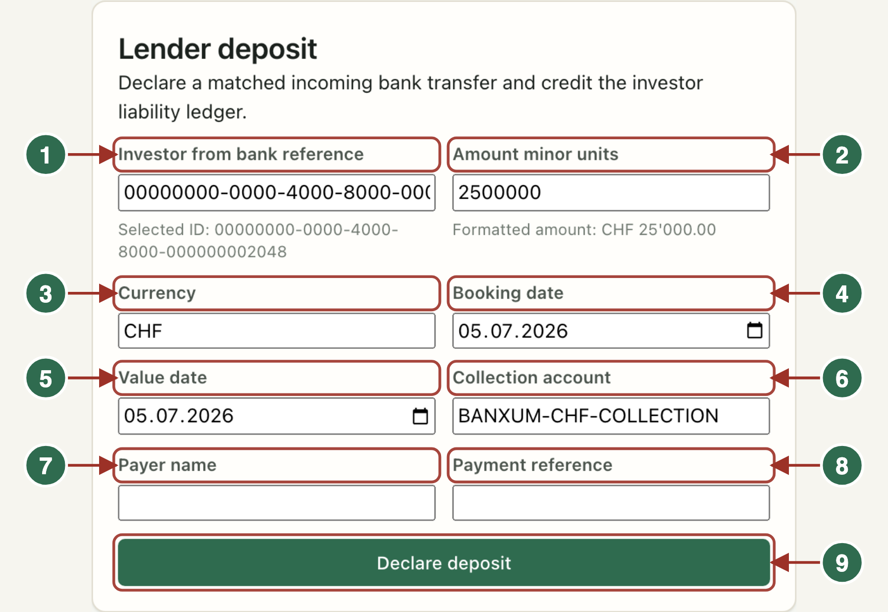
A 'payout instruction' is a saved bank account (IBAN) that Garanta is allowed to send an investor's money to. Withdrawals and the day-60 forced returns pay out to the active, verified instruction. Registering a new one replaces (supersedes) the investor's previous active instruction for that currency.
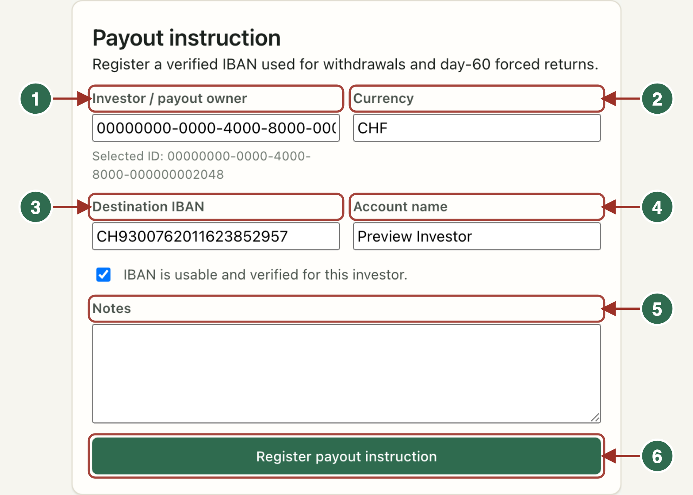
A read-only lookup. It shows an investor's available balance split into the buckets the system uses to decide what they can do with their money. Nothing is changed by running it.
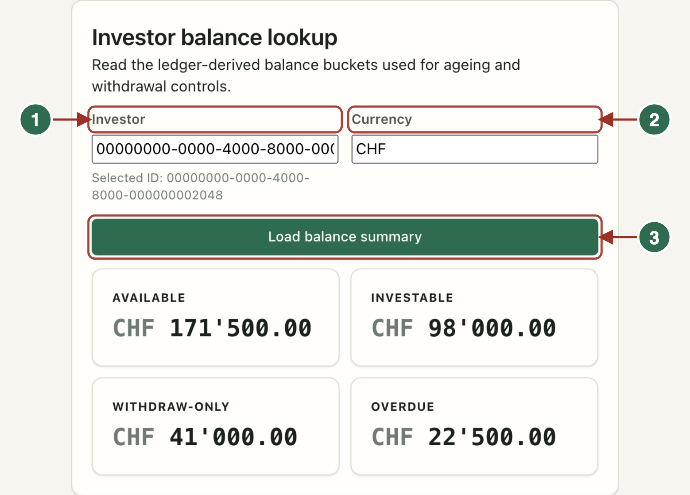
This scan walks every investor's still-available balance lots and applies the ageing rules: it raises reminders as lots approach the 60-day limit, and at/after day 60 it either auto-creates a forced withdrawal (if a verified payout IBAN exists) or moves the lot into penalty mode and charges a daily penalty. It can be run safely as a dry run first.
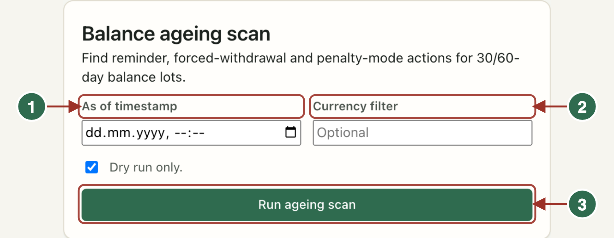
A 'reconciliation snapshot' is a point-in-time check that the real bank balance matches the sum of everything the ledger says Garanta owes and holds (investor balances, payables, accrued revenue, FX clearing, suspense, plus any pending exceptions you note). It records the difference and raises alerts if anything is off.
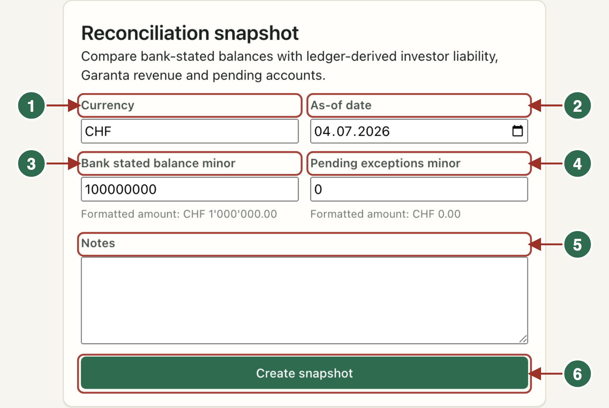
This form handles an investor withdrawal that the investor already requested. You either finalize it (record that the bank actually paid it and clear the ledger) or cancel it (release the reserved funds back to the investor before the bank sends anything). The lookup only shows withdrawals in 'requested' status.
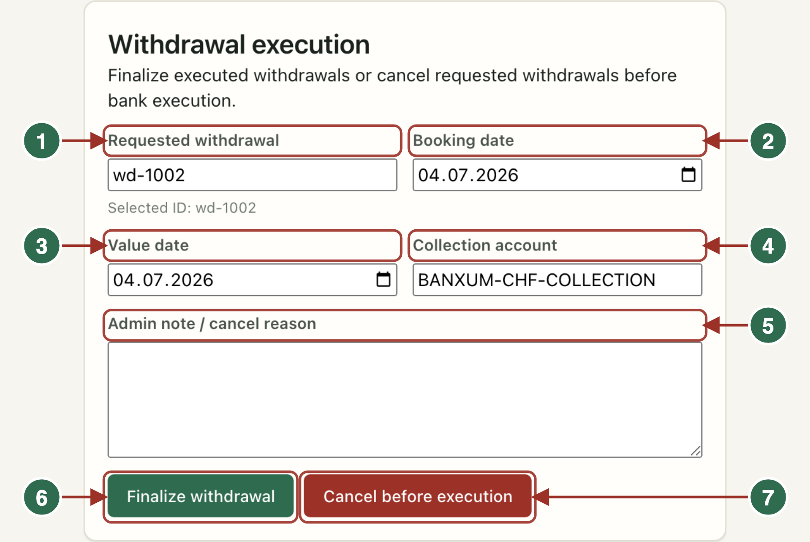
A 'disbursement' is the outgoing payment of a fully-funded loan to the borrower's bank account. This form records that payout in the ledger, clearing the borrower-disbursement payable against the collection cash. It only works once the loan is in 'funded' status.
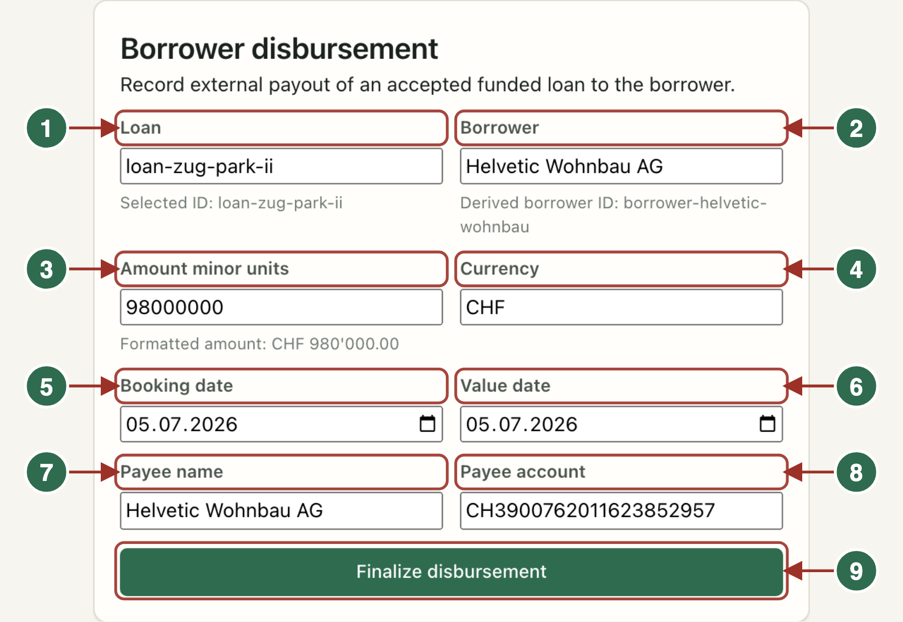
FX means foreign exchange (swapping one currency for another, e.g. CHF to EUR). When investors convert balances inside the platform, Garanta later settles the net amount with a real bank/broker. This wide panel lets you load two reports for a date range and then declare that external settlement.
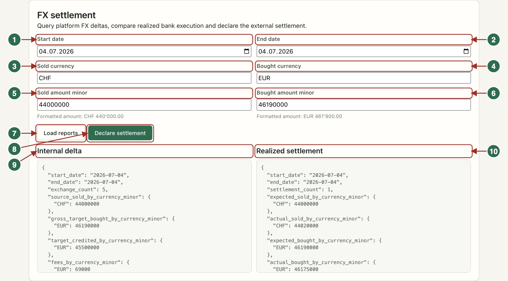
This screen is the lending engine of BANXUM. It is where you set up the companies that borrow money, build the loans they want, and run those loans from the moment they go live until they are fully repaid or written off.
A quick mental model of the product. Individual investors (called lenders) put money into their BANXUM account. The platform then funds loans to vetted business borrowers. Borrowers repay over time with interest. Lenders earn that interest and can later withdraw.
Borrowers are companies, not people with logins. There is no borrower portal. An admin types in every borrower's details by hand. The borrower never sees this screen.
Two jargon terms you will see everywhere. The primary market is where a brand-new loan is first funded by investors. The secondary market is where an investor who already owns a slice of a loan sells that slice to another investor. This screen handles admin tasks for both.
This page is laid out top to bottom as: key metrics, then a Borrowers table, then a Loans table, then four action panels (Primary marketplace operations, Secondary-market approvals, and Servicing and recovery).
A quick at-a-glance count of borrowers, loans, committed money and loans that need attention. These numbers are derived live from the loaded borrower and loan lists.
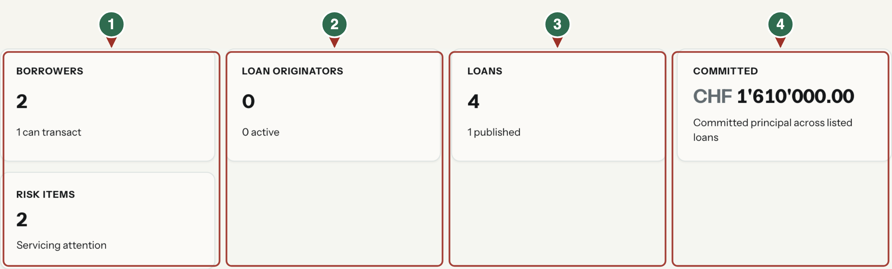
Borrowers are companies that admins enter by hand. KYB stands for Know Your Business: the company-level identity, ownership and compliance check (the business equivalent of KYC for a person). A loan to a borrower can only go live if that borrower's KYB is Approved and the borrower has no compliance hold.
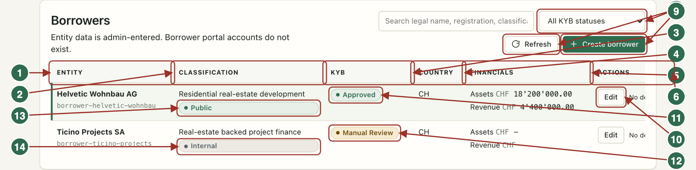
Each row is one loan. A loan is created as a draft, then published so investors can fund it. A loan can only be published when its required fields, repayment schedule, funding window and the borrower's KYB all pass their checks.
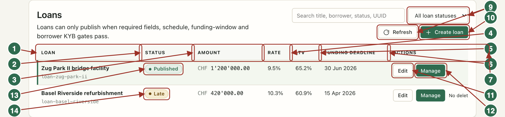
This panel runs the live primary-market actions on a single selected loan. The primary market is the first round of funding, where investors put money into a new loan. The panel reads the loan you selected in the table above, and most actions ask you to confirm before they run.
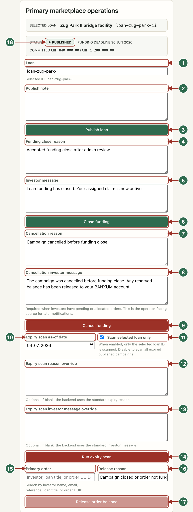
The secondary market is where an investor who already owns part of a loan lists that slice for sale to another investor. Most listings go live automatically, but non-standard ones (for example on a non-performing loan) need an admin to approve them with a disclosure note. This panel approves, rejects or removes those listings.
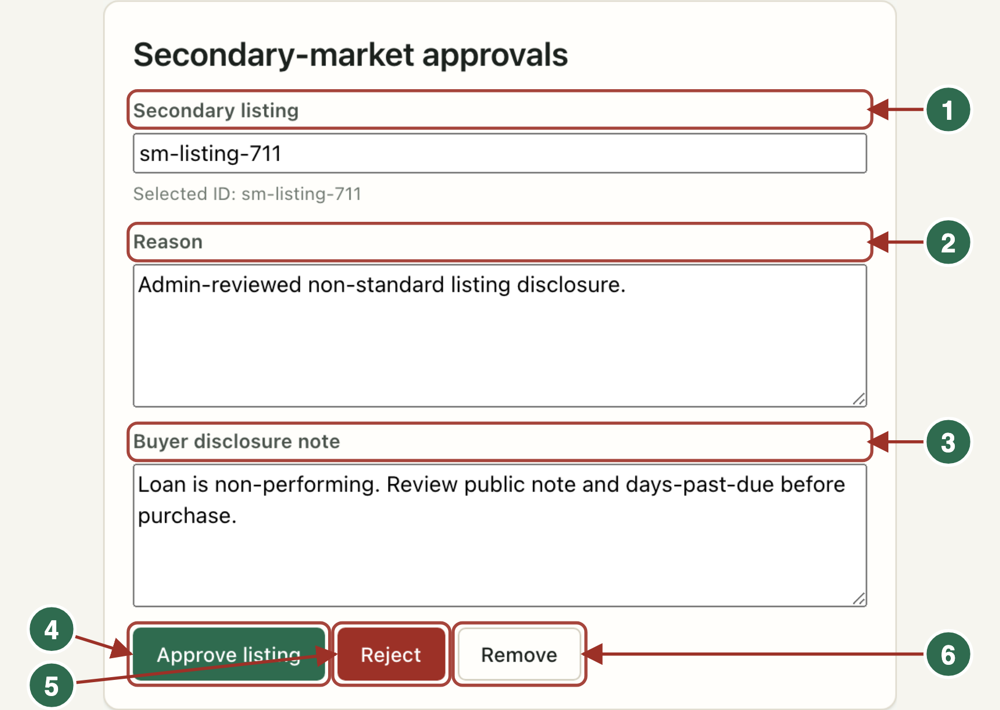
Servicing means running a loan after it is funded: recording the borrower's repayments and keeping its status accurate. Recovery handles loans that have defaulted (gone badly past due) by recording money clawed back. This panel acts on the loan selected in the table above.
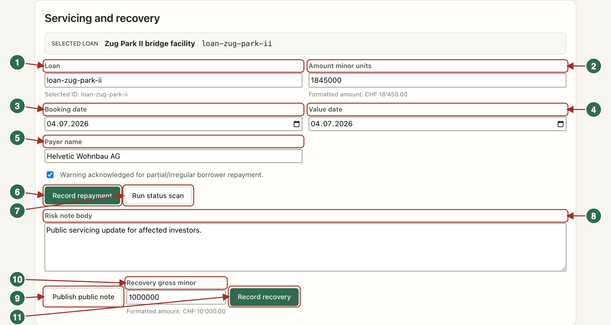
This screen has two jobs. On the left you generate exports: data files that pull together accounting, tax, regulatory, and day-to-day operational records into a single download. On the right you search the audit log: a permanent record of who did what, to what, and when.
A "report" here is just a structured snapshot of platform data for a chosen date range, produced as a file you can hand to accountants, auditors, regulators, or banks. You pick what data you want (the report type), the file format (CSV, PDF, or ZIP), how much sensitive detail to include (the redaction mode), and the time period. The system builds the file on demand and gives it back to you to download.
The audit log is the platform's tamper-proof history book. Every meaningful action by staff or the system is written here once and can never be edited or deleted (it is "append-only"). It records the actor (who), the action (what they did), the target (what it was done to), and the exact time. It is your evidence trail when someone asks "who changed this?".
Important context for a newcomer: PII means "personally identifiable information" such as names and account-owner IDs. Some reports and the "Full" redaction mode expose this sensitive data, so the system restricts them to senior staff (superadmins). Generating any report itself writes an entry into the audit log, so report generation is never invisible.
A form that builds a data export on demand. You select the report type, output format, redaction mode, and period, then click Generate report; the system returns a downloadable file plus a checksum and manifest.
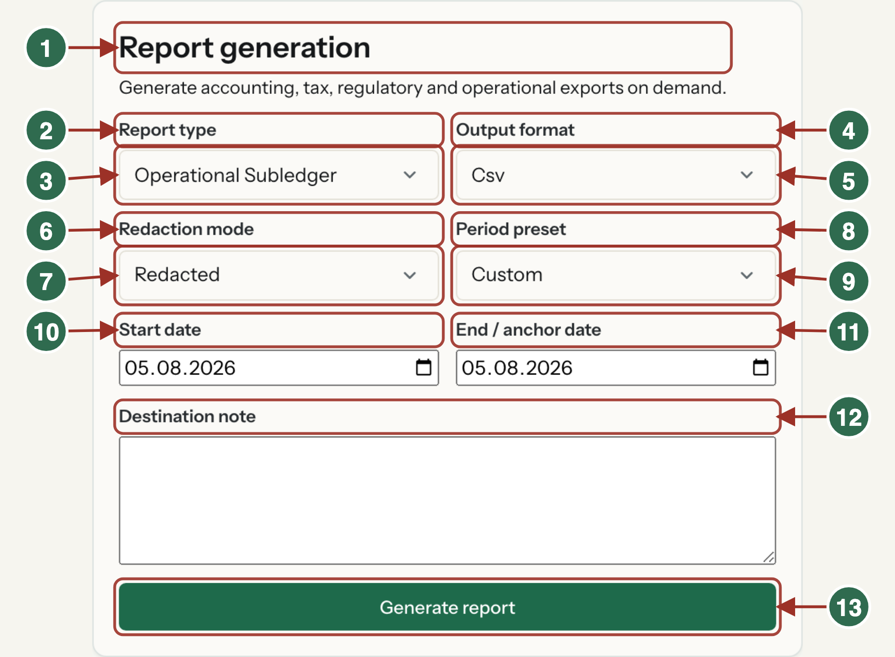
A table of the most recent audit-log entries (newest first). Each row is one recorded action and shows when it happened, what it was, who did it, and what it was done to. The log is append-only evidence: entries can never be edited or removed.
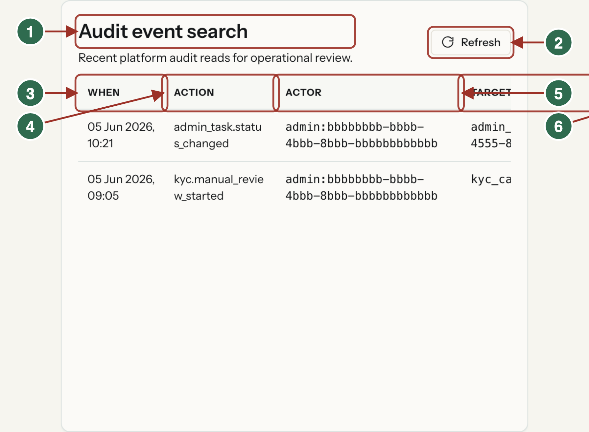
This screen is the governance area of the admin console. It is locked to superadmins. A superadmin is the highest level of staff account; a plain admin cannot open most of what is here.
There are two kinds of accounts on BANXUM. Investors (also called lenders) are the public users who deposit money and fund loans. Admins are Garanta staff who run the platform from this console. They are completely separate; an investor is never an admin.
Three jobs live on this screen. First: manage the legal documents that investors must tick a box to accept (called templates). Second: create new admin staff accounts. Third: look up any user and change whether their account is allowed to log in or transact.
A note on jargon. 'Clickwrap' means the small legal text plus tick-boxes a user agrees to before an action (like accepting terms). A 'template' is the wording of that text. A 'version' is one dated snapshot of that wording. 'Immutable' means once saved it can never be edited; you only ever create a new version. This matters because every acceptance is kept as legal evidence tied to the exact version the user saw.
This card lists the legal/clickwrap templates investors must accept. Each row is one version of a template. Versions are immutable: you never edit one, you create a new version and then publish it to make it live. The list is filtered by the Category dropdown at the top. The Primary Market Investment category is the project investment confirmation / claim assignment agreement that is generated for each investor order.
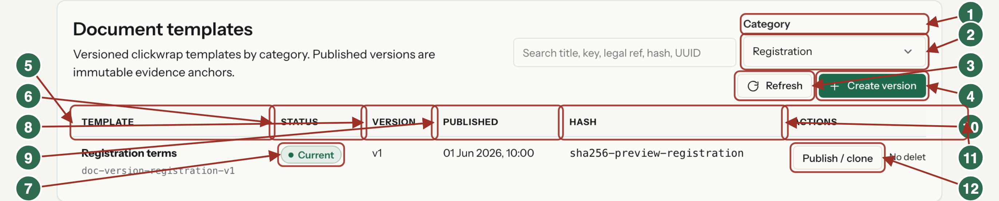
This card is the user directory plus the entry point for creating admin staff. You search for any user (admin or investor) by typing into the search box; you must type at least 3 characters before results load. Each result row offers an 'Access controls' button that opens the same account-access form shown in the next figure. The 'Create admin' button opens the new-admin form.
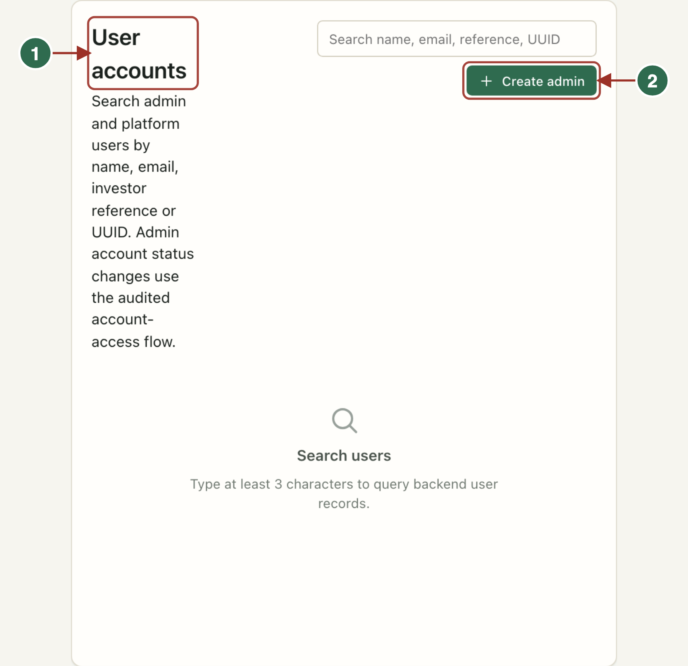
This form changes whether a user account is allowed to operate. You pick the user, choose a new status, give a reason and a note, then apply. Every change is recorded in the audit log. Use the least restriction that solves the problem, and remember that closing an account is one-way.
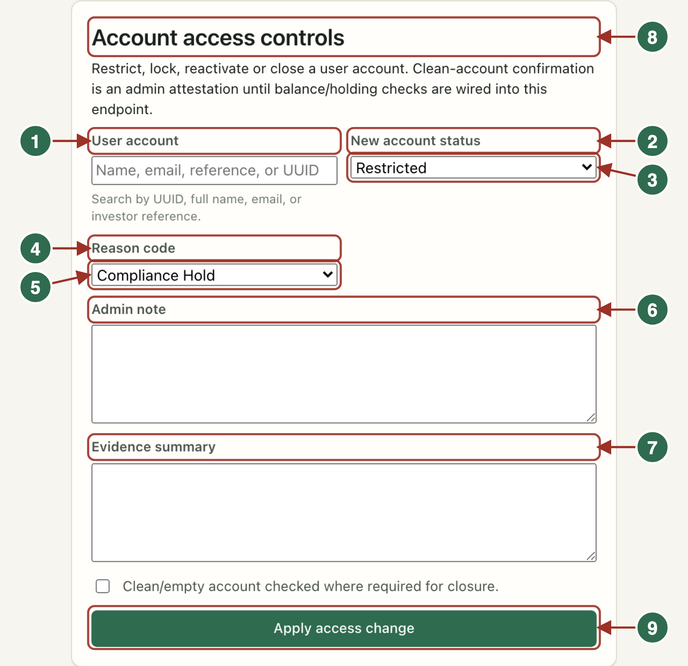
Step-by-step recipes that connect the screens for the jobs you will actually do. Each step names the screen and the control to use.
Goal: Take a brand-new business borrower from nothing to a live, investable loan on the marketplace. · Who: Operations admin (any active admin can do every step).
Result: The loan is 'Published' and visible to investors on the primary marketplace; investors can now pledge funds to it.
Goal: When money lands in the Garanta collection bank account, credit it to the correct investor's BANXUM balance. · Who: Operations admin (finance).
Result: The investor's available balance increases by the deposited amount; a reconciled bank operation and ledger entry are created and audited.
Goal: Make and record the Garanta decision on an investor identity check that the provider could not auto-clear. · Who: Compliance / AML officer (active admin).
Result: The case moves to its new status, the investor is activated if approved, and the decision plus reason and note are audit-logged.
Goal: Pay money back out to an investor's bank account, in two parts: first record the destination IBAN, then finalize the bank transfer. · Who: Operations admin (finance).
Result: The destination IBAN is on file as verified; the withdrawal is either finalized (money paid, ledger cleared) or cancelled (funds returned to the investor's balance).
Goal: Return funds that an investor has held idle past the 60-day regulatory limit, then pay them out. · Who: Operations admin (finance).
Result: Over-age funds leave the platform as finalized withdrawals; lots with no verified IBAN are moved to penalty mode and are actively charged a daily penalty against their balance on every live scan until a verified IBAN is registered.
Goal: Book the money a borrower pays back, keep the loan's status accurate, and act when a loan falls behind. · Who: Operations admin (servicing).
Result: Repayments are booked against installments; the loan's status reflects reality (funded/late/defaulted); investors are kept informed; recoveries are distributed.
Goal: Let an investor resell their loan claim to another investor when the listing needs admin sign-off. · Who: Operations admin (marketplace).
Result: The listing is either live to buyers with a disclosure, rejected, or removed - and the decision is audited.
Goal: Pay out the raised money to the borrower once a loan has finished funding. · Who: Operations admin (finance).
Result: The borrower receives the principal; the loan's borrower-payable is cleared in the ledger and the action is audited.
Goal: Produce an accounting/regulatory export and look up who did what, when, in the audit trail. · Who: Operations admin (finance / compliance).
Result: A downloadable, checksummed report file, plus a readable list of recent audited admin actions.
Goal: Add a colleague to the ops console, and put a hold on a problematic investor account. · Who: Superadmin (for creating admins) / compliance admin (for the access change).
Result: A new admin can log in; the targeted account is moved to the chosen status with a documented reason in the audit trail.
Goal: Start your shift, read every queue, triage by priority, and jump to the right module to clear each item. · Who: Operations admin (any).
Result: Every queue is empty or down to non-actionable items; urgent and overdue work is cleared first; reconciliation breaks are converted into tracked tasks.